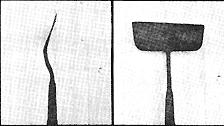

All right. You've just cut twenty cedar fenceposts to replace those rotted ones along the edge of the south pasture. And you know that you should skin the bark off the posts with a drawknife (so that damaging insects, moisture, and fungi will have no place to hide)... but you're tempted to sorta forget that part of the job, since bark stripping can be wearisome work. And, besides, you don't have the time.
Well, peeling the bark off those timbers doesn't have to be a slow and tedious task. Not if you have a debarking tool.
My debarker-I've also heard it called a "peeling spud"-is simply a garden hoe with the blade straightened out. To make one yourself just take an old hoe, heat its "neck" until the metal is malleable, and bend the blade back until it forms a 165° angle with the tool's handle. Sharpen the business end of the device, and presto! You've got a tool that's guaranteed to make easy work of any bark-stripping job.
To use the spud, just anchor or wedge your post so it won't move, stand over it, and dig in. With a little practice, you'll soon be able to peel off two- to three- foot strips with one swipe. (Try that with a drawknife!)
One more word of wisdom. Always debark your wood while it's still green. You'll find that the longer the timber cures, the more difficult it is to strip off its "wrapper".
|
 |
|
|